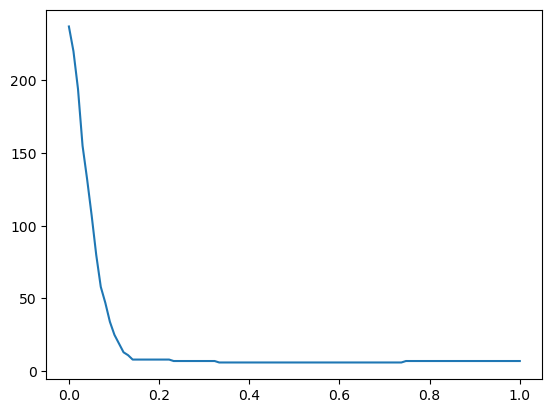

import numpy as np
import pandas as pd
import sklearn.linear_model
import matplotlib.pyplot as plt05wk-023: 취업+각종영어점수, Lasso
1. 강의영상
2. Imports
3. Data
df = pd.read_csv("https://raw.githubusercontent.com/guebin/MP2023/main/posts/employment_manytoeic.csv")
df| employment_score | gpa | toeic | toeic0 | toeic1 | toeic2 | toeic3 | toeic4 | toeic5 | toeic6 | ... | toeic490 | toeic491 | toeic492 | toeic493 | toeic494 | toeic495 | toeic496 | toeic497 | toeic498 | toeic499 | |
|---|---|---|---|---|---|---|---|---|---|---|---|---|---|---|---|---|---|---|---|---|---|
| 0 | -0.949314 | 0.051535 | 135 | 134.889567 | 132.466381 | 134.328746 | 133.692285 | 134.490387 | 133.482738 | 135.805902 | ... | 134.568925 | 135.248135 | 135.557690 | 134.307587 | 136.115518 | 136.895841 | 135.599610 | 134.083179 | 135.125554 | 134.320048 |
| 1 | 4.861725 | 0.355496 | 935 | 933.897710 | 934.928312 | 935.665096 | 934.115679 | 934.204277 | 935.213653 | 935.551083 | ... | 932.507220 | 934.449154 | 935.213485 | 935.216839 | 935.039467 | 935.400347 | 934.172674 | 935.189259 | 936.578955 | 937.278620 |
| 2 | 5.582663 | 2.228435 | 485 | 483.020037 | 484.161879 | 486.041920 | 482.954745 | 485.891348 | 484.849052 | 485.410756 | ... | 484.863750 | 485.516249 | 484.523790 | 486.036836 | 485.011074 | 485.637154 | 484.001982 | 485.544729 | 485.815829 | 485.042914 |
| 3 | 3.919694 | 1.179701 | 65 | 66.780387 | 67.388852 | 65.622595 | 62.763278 | 65.935953 | 67.288798 | 66.314210 | ... | 64.151163 | 64.677268 | 66.340589 | 64.291130 | 64.540950 | 66.728237 | 65.474820 | 65.725247 | 65.015707 | 65.399658 |
| 4 | 8.286851 | 3.962356 | 445 | 444.348116 | 445.520801 | 446.419087 | 442.715198 | 445.043974 | 444.849464 | 446.178144 | ... | 444.993117 | 444.999768 | 445.773163 | 444.924819 | 442.703987 | 445.118233 | 445.119561 | 446.214723 | 444.983397 | 444.455462 |
| ... | ... | ... | ... | ... | ... | ... | ... | ... | ... | ... | ... | ... | ... | ... | ... | ... | ... | ... | ... | ... | ... |
| 495 | 7.002081 | 4.288465 | 280 | 280.520486 | 281.060157 | 281.291354 | 280.816827 | 280.867509 | 279.748219 | 280.956388 | ... | 280.864668 | 280.261168 | 278.871055 | 280.267526 | 279.792068 | 279.931181 | 280.606405 | 280.710435 | 279.602746 | 280.472047 |
| 496 | 5.431050 | 2.601212 | 310 | 310.015294 | 310.003728 | 308.680788 | 309.179518 | 310.908038 | 308.580682 | 308.720718 | ... | 310.670717 | 310.872724 | 309.631197 | 309.723108 | 309.624440 | 310.207927 | 308.519863 | 309.858127 | 310.602814 | 310.841082 |
| 497 | 0.088812 | 0.042323 | 225 | 225.226422 | 225.738373 | 223.342848 | 226.416036 | 223.478492 | 225.080199 | 224.896846 | ... | 223.252383 | 226.178697 | 225.494945 | 225.154573 | 225.254684 | 224.711397 | 225.259744 | 223.700222 | 225.700224 | 225.120175 |
| 498 | 3.806388 | 1.041416 | 320 | 321.135794 | 319.880713 | 319.759936 | 321.071771 | 320.085155 | 320.657430 | 320.802495 | ... | 319.875882 | 321.006234 | 319.054499 | 320.498798 | 320.407021 | 323.002351 | 319.496038 | 320.011256 | 319.304070 | 320.418582 |
| 499 | 6.739095 | 3.626883 | 375 | 376.032149 | 373.131026 | 374.800140 | 374.541924 | 375.363948 | 375.758260 | 375.045161 | ... | 375.452139 | 374.790209 | 374.247366 | 372.755630 | 373.711254 | 376.621000 | 373.979317 | 374.788932 | 374.153385 | 373.678255 |
500 rows × 503 columns
4. 분석
- 적용할 방법: Lasso
df_train, df_test = sklearn.model_selection.train_test_split(df,test_size=0.3,random_state=42)X = df_train.drop(['employment_score'],axis=1)
XX = df_test.drop(['employment_score'],axis=1)
y = df_train[['employment_score']]
yy = df_test[['employment_score']]prdtr = sklearn.linear_model.Lasso()prdtr.fit(X,y)
#prdtr.coef_/home/cgb2/anaconda3/envs/ag/lib/python3.10/site-packages/sklearn/linear_model/_coordinate_descent.py:628: ConvergenceWarning: Objective did not converge. You might want to increase the number of iterations, check the scale of the features or consider increasing regularisation. Duality gap: 2.574e-01, tolerance: 1.988e-01
model = cd_fast.enet_coordinate_descent(Lasso()In a Jupyter environment, please rerun this cell to show the HTML representation or trust the notebook.
On GitHub, the HTML representation is unable to render, please try loading this page with nbviewer.org.
Lasso()
prdtr.score(X,y)0.7090183447263774prdtr.score(XX,yy)0.73023150580964715. Lasso의 비법
- LinearRegression vs Lasso
prdtr_list = [sklearn.linear_model.LinearRegression(), sklearn.linear_model.Lasso()]for prdtr in prdtr_list:
prdtr.fit(X,y)fig,ax = plt.subplots(2)
ax[0].plot(prdtrs[0].coef_.reshape(-1)[1:],label='Toeic Coefs of LinearRegression',color='C0')
ax[0].legend()
ax[1].plot(prdtrs[1].coef_.reshape(-1)[1:],label='Toeic Coef of Lasso',color='C1')
ax[1].legend()<matplotlib.legend.Legend at 0x7f11fd15cfd0>
- Lasso는 훨씬 Spare한 Coef를 가진다.
(abs(prdtr_list[0].coef_)>0).sum() # 502개 모두 값이 있음..502(abs(prdtr_list[1].coef_)>0).sum() # 대부분0이고 7개정도만 0이 아님76. 하이퍼파라메터
alphas = np.linspace(0,1,100)
alphasarray([0. , 0.01010101, 0.02020202, 0.03030303, 0.04040404,
0.05050505, 0.06060606, 0.07070707, 0.08080808, 0.09090909,
0.1010101 , 0.11111111, 0.12121212, 0.13131313, 0.14141414,
0.15151515, 0.16161616, 0.17171717, 0.18181818, 0.19191919,
0.2020202 , 0.21212121, 0.22222222, 0.23232323, 0.24242424,
0.25252525, 0.26262626, 0.27272727, 0.28282828, 0.29292929,
0.3030303 , 0.31313131, 0.32323232, 0.33333333, 0.34343434,
0.35353535, 0.36363636, 0.37373737, 0.38383838, 0.39393939,
0.4040404 , 0.41414141, 0.42424242, 0.43434343, 0.44444444,
0.45454545, 0.46464646, 0.47474747, 0.48484848, 0.49494949,
0.50505051, 0.51515152, 0.52525253, 0.53535354, 0.54545455,
0.55555556, 0.56565657, 0.57575758, 0.58585859, 0.5959596 ,
0.60606061, 0.61616162, 0.62626263, 0.63636364, 0.64646465,
0.65656566, 0.66666667, 0.67676768, 0.68686869, 0.6969697 ,
0.70707071, 0.71717172, 0.72727273, 0.73737374, 0.74747475,
0.75757576, 0.76767677, 0.77777778, 0.78787879, 0.7979798 ,
0.80808081, 0.81818182, 0.82828283, 0.83838384, 0.84848485,
0.85858586, 0.86868687, 0.87878788, 0.88888889, 0.8989899 ,
0.90909091, 0.91919192, 0.92929293, 0.93939394, 0.94949495,
0.95959596, 0.96969697, 0.97979798, 0.98989899, 1. ])prdtr_list = [sklearn.linear_model.Lasso(alpha=a) for a in alphas]
for prdtr in prdtr_list:
prdtr.fit(X,y)nonzero_coefs = [abs(prdtr.coef_>0).sum() for prdtr in prdtr_list] plt.plot(alphas, nonzero_coefs)
- alpha가 커질수록 0인 coef가 많아짐